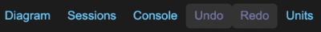
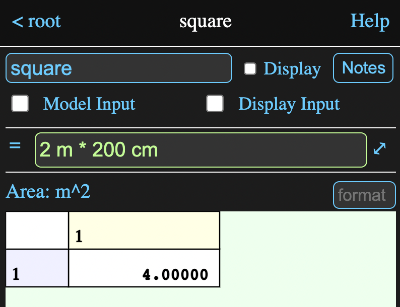
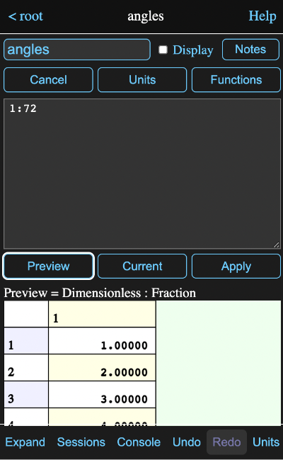
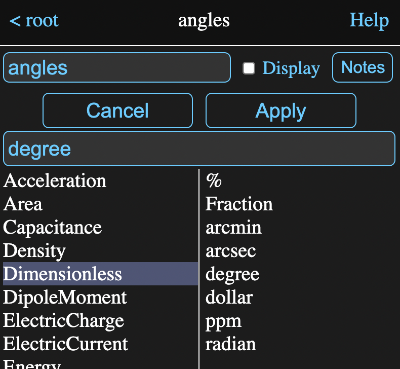
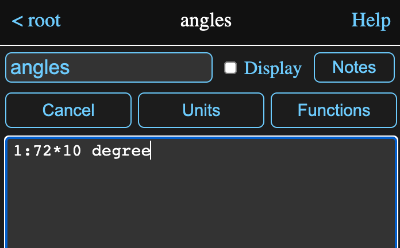
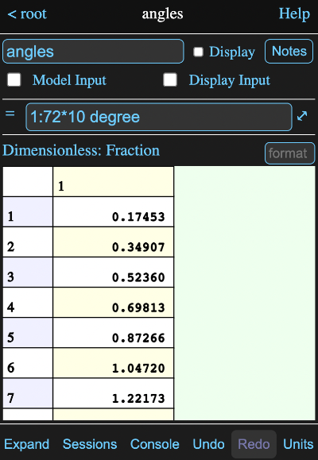
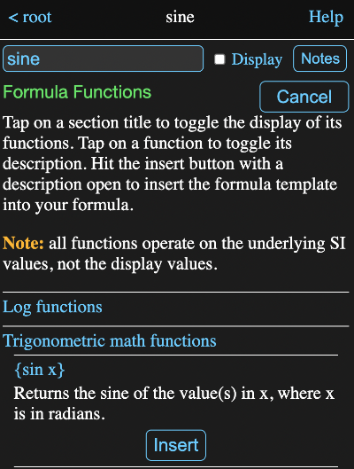
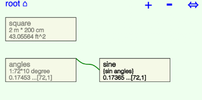
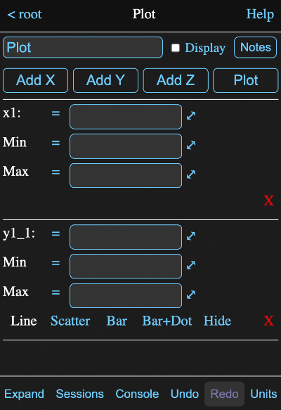
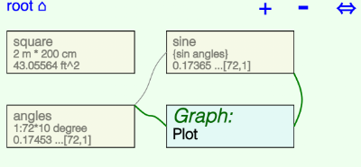

Overview
This tutorial will attempt to introduce the basics of Math Minion. To keep the size manageable, I won't repeat all the stuff from other help pages, but I will try to use lots of links to relevant pages and sections.
So let's get started.
Getting Started
When you access Math Minion for the first time or on a new server or from a new browser, the Getting Started session will be loaded and if your browser window is wide enough. you will see something like this:

On the left is a diagram showing the various tools contained in the root model. A model is simply a collection of tools, possibly including other models.
On the right is an information view about the currently selected tool, which in this case is the root model itself. Results for tools contained by a model can be displayed on its information view and in this case the HtmlPage named welcome is displayed.
On a narrow device, like a phone, you probably will just see the information view, but on the bottom button bar there will be an Diagram button that will switch to the diagram view.
This will have a corresponding Info button.

With the split view, which should appear even on a phone if you rotate the device to the horizontal, the button bar will look like:
Start a New Session
On the button bar discussed above. tap the Sessions button to bring up a view of the saved sessions. If you haven't run Math Minion before, Getting Started will be the only one.

Tap the New button to start a new session. The information view should now be empty except for the name field for the root model and the diagram should be blank.
Add Expressions
Tapping any where on the diagram background will produce this background menu:
Tap on Add Expression to create an expression tool. An icon will appear on the diagram where you originally tapped:

and the top of the information view will become:

Note, if you make a mistake, you can probably just tap the Undo button on the bottom button bar to reverse it.
Tap in the name field (currently has x1) and change the name to square and hit return.
Now tap in the formula field (to the right of the equals sign) and enter the formula:
2 m * 200 cm
and hit return.
The information view should now like this:
The current conversion unit set is SI, so the value is displayed in m^2 and Math Minion recognizes that as an Area.
Math Minion is pretty rigorous about conversion units and uses dimensional analysis to ensure units can be mixed in appropriate ways.
All Math Minion values are matrices, so this scalar appears as a 1x1 matrix.
Tap on the Units button at the bottom of the information view
to get the units view:
Tap on US to select US units and then on the < square button at the upper left to return to the square expression. (Everything that is blue in information views has a tappable action).
The result for square is now shown in the default US area unit of ft^2.
Repeat the steps above to switch back to SI units so that square again shows the result in square metres.
Okay, let's try something different. Click on the background again and select Add Expression to create another expression. Name it angles and then tap on the ⤢ icon to the right of the formula field. This will bring up a formula editor which allows us to edit larger more complex formulas, but also has some helpful tools.
Enter the formula
1:72
into the text area and then tap the Preview button at the bottom. You should see something like:
The area at the bottom has been filled with the result of evaluating the formula. In this case it is a column array with elements from 1 to 72, which is what the colon operator does. You can scroll or drag on the table to see more values and dragging on the row number column will scroll through it quickly.
go back to the formula and add *10 and a space, so it looks like:
and tap on the Units button to bring up the unit browser. Tap on Dimensionless in the left hand column and then degree in the right column, which should give you this:
Tap the Apply button and degree will be inserted into the formula at the cursor location:
Tap the Apply button to assign the formula to the angles expression.
That doesn't look right for 10 times 1 to 72 should be 10, 20, 30 etc. However note the display unit is Fraction which is the default unit for the Dimensionless unit type. In fact the values are in radians as degrees have been converted to the base unit.
Tap on Dimensionless: Fraction and the unit browser should reappear with the Dimensionless type already selected. Choose degree from the right hand column and Apply it. This should result in:

which is what we expected. Note that all values and calculations are done internally in SI base units and selecting different units for display has no effect on the actual values calculated. Similarly all inputs are converted to SI base units immediately.
Now create another expression and name it sine and then tap on the ⤢ icon to the right of the its formula field.
In the resulting formula editor, if you enter {s in the text editor, you should see something like this:

The preview area now shows all the functions that start with s. If you were to type additional characters, the list would be shortened appropriately, but just tap on
{sin x}
to insert the function into your formula to give you this.
Math Minion functions are always enclosed in curly braces {...}, with the name of the function immediately following the opening brace. The parameters, if any, follow as a comma separated list followed by the closing brace.
Inserting a function with the function preview or function browser will place the cursor before the first argument. You will almost always have to replace the arguments, but they are included as reminders. If you type a ? in front of the first argument, the preview area will show a brief description of the function:
Remove both the ? and the x and you will get the following:

The preview area now displays all the available tool names. Typing will reduce the list appropriately, so typing an a will reduce the list to just angles. Hitting Tab after you have entered one or more characters will insert the name at the top of the list into the formula or you can just tap on one of the names in the list. Do either so the formula reads:
{sin angles}
The function preview is handy when you have an idea of what function you want, but you will sometimes want to browse through the functions and their descriptions to see what is available.
Tap on the Functions button to open a function browser.
The functions are presented in groups like log functions, trig functions etc., which expand to show the actual functions when you tap on them.
For instance, tap on Trigonometric math functions row and then on {sin x} in the list that is revealed. You should see the description of the function and an Insert button.
Tapping on the Insert button would return you to the function editor with the function inserted, but as we already have the function in our formula, just tap the Cancel button.
Tap the Apply button to assign the formula to the sine expression. The information view should now look like this:
The sine of all the elements of the array calculated by the angles expression appear in the table at the bottom. In general Math Minion operators and functions work on all elements of their arguments.
The diagram will now look something like the following, although your icons will probably be in different positions,
You can drag the icons around to arrange them however you want. You can also zoom in or out with a pinch or scroll action or use the + and - buttons at the upper right.
Tapping on the title root in this case will automatically resize and recenter the diagram. If present, the ⇔ symbol on the right can be dragged to resize the information view. Tapping on any icon will present its information in the information view.
Note the line going from the corner of the angles expression to the center of one of the vertical sides of the sine expression. This indicates that the sine expression is using the value of angles in its calculations.
Plotting Results
Tap on the diagram background again and this time select Add Display Tool and then Graph from the resulting menu. Rename it Plot and the information view will look like this:
Enter angles in the x1 formula field and sine in the y1_1 one. Note that the unit beside angles is Fraction. Tap on it and select degree from the unit browser and Apply it.
Now tap the Plot button to show the plot:
Dragging the graph around will result in the axis labels changing accordingly. You can also zoom in and out.
Note that we have made a small mistake in that the plot begins at 10 degrees, rather than 0 degrees.
Go back to your diagram, which may now look something like this:
and tap on the angles icon and change the formula in the resulting information view to
0:72*10 degree
Hit return and then click on the graph icon Plot and the correction should be visible:
Add one last expression named table and enter the its function editor. Type a p, which will reduce the preview list to just plot. Now type a dot and you will see:
The preview area now shows all the parameters available from the graph tool Plot. There are quite a few, but typing a t should reduce the list to just table and table1. Tap table and apply the formula to get:
which represents the lines of the plot as a table value.
To finish up, tap on the Sessions button at the bottom of the information view and then on the Save button. A dialog will appear asking for a name to save the session as:
Give it a name and tap Ok to save the session in the browser's database. Note that this occurs on your local device and nothing is sent over the network. For added safety I frequently use the Export All button on the Sessions view to save a copy of everything to a file on my device.
Conclusion
That is it for this very basic introduction. It barely touched on the things Math Minion can do, so you might want to go back to the Getting Started session and browse through its examples and descriptions as well as other help pages.
If you get stuck or have and questions or comments, please don't hesitate to contact me.